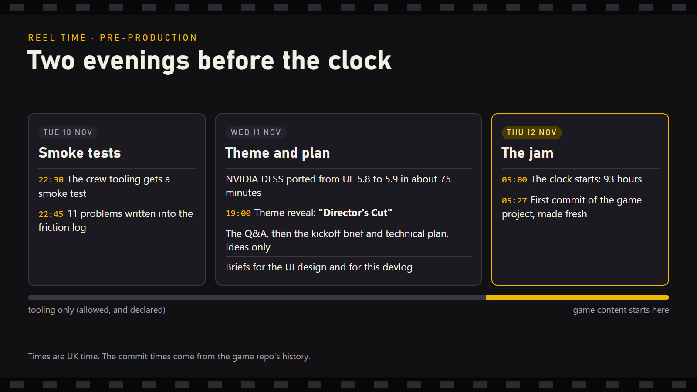

Made before the jam
What existed before the clock started, as the jam rules ask.
The jam rules ask for anything made before the start to be declared, including prompts and scripts. Everything here is tooling and planning from before Thursday 12 November 2026. None of it is game content: no design documents, code, levels, art or audio for the game existed before the jam started.
The story behind this list is in Pre-production: everything that existed before the clock.


Workflow tooling (prompts and scripts)
- The crew setup: shared rules, one instruction file per session role, a task and inbox system, a status board, day and night mode, a jam clock and digest scripts, and Claude Code hooks, subagents and skills.
- A kit template: an empty script skeleton for importing and building Unreal assets. It contains no game content.
- Release tools: a packaging and smoke-test script and a script that cuts the gameplay video.
- This site's generator, its page templates and stylesheet.
Briefs and plans, written on Wednesday 11 November
- A kickoff brief: ideas only, written by me with Claude after the theme reveal and before the start. It describes the game concept for the Director. No code, assets, levels or other game content were made before the start.
- A technical plan for the Director. It lists systems, owners and milestones; no code or assets.
- A UI design brief: a prompt for Claude Design. It was run only after the jam started; every mockup and asset it produced was made during the jam.
- A devlog brief: instructions for the Devlog session on voice, framing, privacy and hosting.
Engine plugins added as tooling
- NVIDIA DLSS 4.5 (plugin v8.9.0 for Unreal 5.8, by NVIDIA, under the NVIDIA RTX SDK EULA), with its support plugin StreamlineNGXCommon, recompiled for Unreal 5.9 and installed into the engine on Wednesday 11 November. Changes to make it build and load on 5.9:
bValidateFormatStrings = falsein each module's build rules, explicit integer types in 12 log messages, and the plugins' EngineVersion set to 5.9.0. No game content. During the jam (Thursday) the same plugin was copied into the project as a project plugin by a setup script, so the packaged game builds and ships the DLSS library; the plugin itself is unchanged from the pre-jam install. The full story: Porting NVIDIA DLSS from Unreal 5.8 to 5.9.
Third-party assets are listed separately on the Credits page.